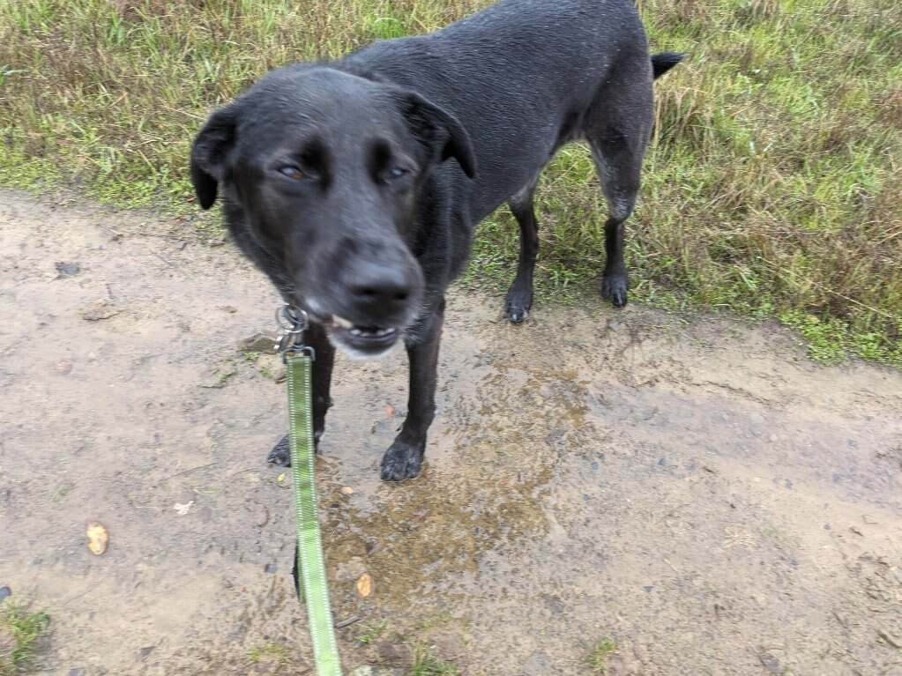

JAN 4, 2023
Looks like Oban had been watching those…

Looks like Oban had been watching those 3am televangelists again. Cause he's convinced this is the rain that's gonna be bigger than Noah. Now he's got me and Della out here looking for two of every kind of bacon, burger, biscuit, chicken, and french fry. In the hopes of preserving them and repopulating the world once everything else has flooded away.
Thomas: Water boy 😍
Mom: And a happy new year to you as well. Good thing you're keeping an eye on those pups!
Dad: Love this